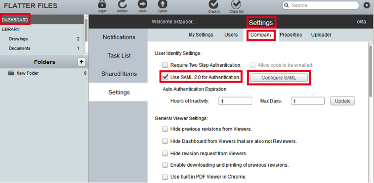
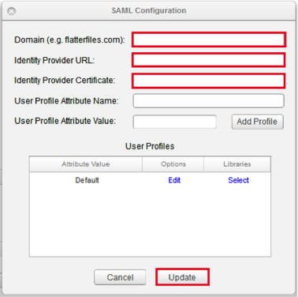
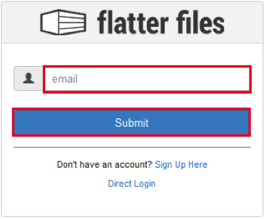

Login to Flatter Files as a user with rights to edit SAML configuration.
Navigate to DASHBOARD > Settings > Company and enter the following:
Select Use SAML 2.0 for Authentication.
Click Configure SAML.

In the SAML Configuration screen, enter the following (see screen capture at end of step for reference):
Domain: Enter your domain (for example: acme.com).
Identity Provider URL: Copy and paste the following into this field:
Sign into the Okta Admin Dashboard to generate this variable.Identity Provider Certificate: Copy and paste the following into this field:
Sign into the Okta Admin Dashboard to generate this variable.Click Update

Done!
Notes:
SP-initiated flows, IdP-initiated flows, and Just In Time (JIT) provisioning are all supported.
For SP-initiated flows, go to https://www.flatterfiles.com/site/login/sso, enter your email address then click the Submit button:
